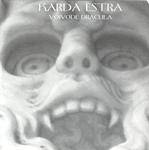

Home Artist links Label link

Karda Estra - Voivode Dracula
| Artist: | Karda Estra |
| Title: | Voivode Dracula |
| Label: | Cyclops CYCL 143 |
| Length(s): | 43 minutes |
| Year(s) of release: | 2004 |
| Month of review: | [02/2005] |
Line up
Richard Wileman - guitars, bass, keyboards, percussion, bouzouki, rastrophone
with
Ileesha Bailey - vocals, breathing 3 on 5
Helen Dearnley - violin
Caron Hansford - oboe, cor anglais, breathing 2 on 5
Zoe King - flute, alto sax, clarinet on 2, breathing 1 on 5
Michelle Williams - clarinet on 5
Tracks
| 1) | Voivode Dracula | 9.14
|
| 2) | Lucy Festina Lente | 6.36
|
| 3) | The Land Beyond The Forest | 6.07
|
| 4) | Mina | 8.12
|
| 5) | Kisses For Us All | 13.18
|
Summary
Wilemann continues to write and record albums under the guise of Karda Estra.
He has an 'unprogressive' tendency to work with women. Did you notice?
And is Caron, Carol?
The music
Well, what can you say about the next Karda Estra album, that has not been
written down before. As always, the music sounds like Karda Estra and
can be located somewhere between The Enid,
Steve Hackett and the somber side of Hollywood soundtracks (Elfman), but with
a chamber orchestra set-up instead of a full-blown symphony orchestra. This has
nothing to do with money is my first guess, the intimacy is necessary for the
largely subdued music. Plenty of dissonants and darkness on the opening title
track. Plenty of repetitivity here, making the melodic minimalist also
an influence to reckon with. Most prominent though is the romantic feeling
that pervades the music. Not the sugary romance of Claydermann, but of the
romantic composers of the 19th century and a bit after.
Lucy Festina Lente has the vocals of Ileesha Bailey, through which I can imagine
people are reminded of bands such as the Cocteau Twins. There is more pace and
more variation in pace here, and the piano has taken over the lead, although
violin and wind instruments still have their place, occasionally.
At the end, the music gets a plodding, foreboding feel, and for a Karda Estra,
it is quite loud (I would like to hear more of this).
The Land Beyond The Forest is the next one up. The music is largely subdued in
the beginning, dreamy. The piano sounds somewhat far away, and I hear keyboards
droning. Again, the music has a dark brooding feel, this time led by the oboe.
With Mina the soothing voice of Bailey returns. There is a certain fragileness
in the music here, the piano playing almost tender. Then the music becomes
heavier again, I even hear something akin electric guitar distortion in the
back. Nothing to get worried about though. The end has a bit of reverb treatment
used to good effect.
Kisses For Us All is the conclusion, with its over 13 minutes the longest
one on the album. The three vampires (as guests?) each have their turn here,
which is why three women are credited with breathing above. In between there
is plenty of room for dissonance and tension, plenty of percussion too,
especially of KE. The middle part is rather romantic again, frolic even at times.
Conclusion
Although the albums of Karda Estra have a strong overlap in sound (the music
he makes is extremely recognizable), there is something about this album that
makes me like it more than the others. The somberness, the foreboding, brooding
feeling, and the occasional sharp bite on top the melodic vocalizations
of Bailey, which tend to have a lulling effect and be rather static by
themselves. There is plenty of melody and subtlety here, as well as more powerful
passages to liven things up. References are The Enid, Steve Hackett and a dose of
chamber orchestra, but also stuff such as Kaada (Romances with Mike Patton
is of a similar nature, although it is more experimental).
© Jurriaan Hage